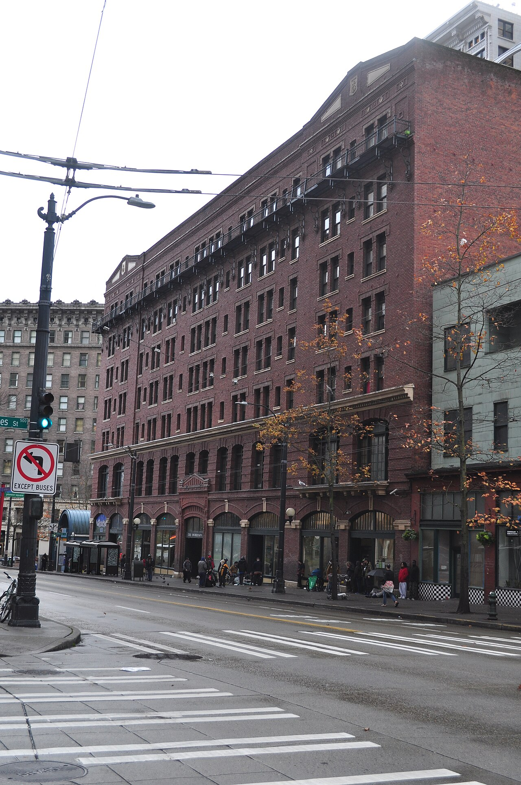
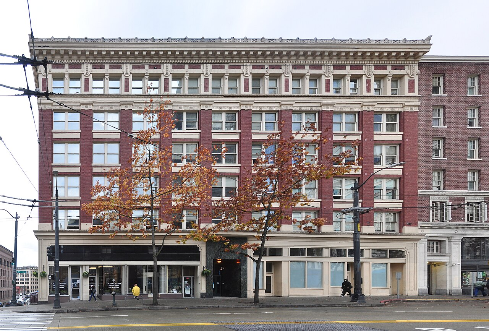

The King County Regional Homelessness Authority was created in 2019 through an interlocal agreement between the City of Seattle and King County. It became operational in 2021. KCRHA is a government entity, not a nonprofit, which means it does not file 990s, but it is subject to the full range of public records laws that apply to government agencies in Washington State.
KCRHA does not provide services directly. It functions as a funding pass-through, distributing money to contracted nonprofit providers through a system called Coordinated Entry for All. The organizations that receive beds, shelter slots, and housing placements through this system are the same organizations that appear in our other accountability briefs.
~$230 million annual budget
$110 million contributed by the City of Seattle (approximately 53% of total funding)
$53 million contributed by King County
0 services provided directly to people experiencing homelessness
The remainder of KCRHA's funding comes from federal sources, primarily HUD Continuum of Care grants. The agency was designed to consolidate the region's fragmented homelessness response under a single coordinating body. That question is no longer open. In 2026 the answer arrived in the form of a forensic audit, a corrective action plan, and a dismantling.
The forensic evaluation found no evidence of large-scale fraud, and we do not allege any. What it found is an agency that could not produce a clean account of a quarter-billion dollars a year. Every finding below should be read against that baseline.
KCRHA's first CEO, Marc Dones, resigned in May 2023 amid allegations of management failures and organizational dysfunction. Two interim CEOs followed, both of whom dropped out of the permanent search process. The agency's current CEO is Kelly Kinnison, who earns $290,000 per year.
To put that number in context: the median household income in Seattle is approximately $110,000. The average tech salary in the city is roughly $160,000. Kinnison's compensation exceeds both of those figures combined, and it is paid for running an agency under whose watch Seattle ranks as the third-worst city in the nation for homelessness. Four leaders in three years is not leadership. It is institutional instability at the top of an agency responsible for $230 million in public money.
The 2026 record settles what kind of leadership this is. An independent investigation found Kinnison retaliated against the two senior staff who questioned her decision to hire two executives at $200,000 each while laying off 13 lower-paid staffers. Published emails show her working to shield her own communications from the Public Records Act. She has called the agency she runs a failed experiment. She remains CEO, and under the Reset she remains the steward of the federal Continuum of Care money.
Partnership for Zero was KCRHA's flagship initiative, launched with the explicit goal of ending unsheltered homelessness in downtown Seattle. The program spent $10 million. It did not achieve its objectives. There has been no public post-mortem explaining what went wrong, no accounting of how the $10 million was spent, and no one has been held accountable for the failure.
The $10 million simply disappeared into the system. For an agency that exists to coordinate the region's homelessness response, the inability to account for the outcomes of its most visible initiative is a fundamental credibility problem.
KCRHA distributes $167.8 million annually to contracted service providers. The top five recipients are organizations that appear repeatedly across our investigation:
| Provider | KCRHA Funding | Brief |
|---|---|---|
| Catholic Community Services | $19.7M | CCS Brief |
| Salvation Army | $17.4M | |
| DESC | $15.6M | DESC Brief |
| LIHI | $14.5M | LIHI Brief |
| Urban League of Metropolitan Seattle | Top 5 |
These organizations are also members of the Housing Development Consortium (HDC), the trade association that lobbies for increased KCRHA funding. The providers receive the money. Their trade group lobbies for more of it. The loop is closed. There is no external pressure in this system, and there is no independent entity measuring whether the money is producing results.
The forensic audit established that KCRHA could not track its money. It did not ask what the money does when it arrives. The answer is in the providers' own IRS filings, and it is the finding that explains everything else in this brief: a large share of the system's spending functions as a permanent operating subsidy for buildings that cannot cover their own costs, run by organizations whose revenue is overwhelmingly government money.
A permanent supportive housing unit in Seattle costs $350,000 to $400,000 to acquire or build, financed through tax credits and public capital grants. Once open, tenants pay roughly 30 percent of incomes that are near zero. Plymouth Housing has put the all-in cost at about $18,000 per person per year, of which a disability check covers $2,000 to $3,000. The gap between what a building earns and what it costs to run is real estate's most basic number: net operating income. Across this portfolio, NOI is structurally negative, and public services-and-operations contracts make up the difference, including the salaries of the staff and managers of the organizations that own the buildings.
| Provider | Revenue | Expenses | Contributions & Grants | Earned Program Revenue | Earned Revenue as % of Expenses |
|---|---|---|---|---|---|
| DESC (2024) | $103.4M | $100.2M | $91.8M (88.8%) | $7.2M* | ~8% |
| Plymouth (2023) | $60.4M | $72.8M | $47.4M (78%) | $13.4M | 18% |
| LIHI (2023) | $129.3M | $76.6M | $93.4M (72%) | $26.2M | 34% |
Source: IRS Form 990 filings, ProPublica Nonprofit Explorer (EINs 91-1275815, 91-1122621, 94-3155150); DESC 2024 from audited financial statements. *DESC earned revenue from 2023 filing. LIHI revenue includes capital grants for construction. Plymouth ran a $12.4 million deficit in FY2023.
Read the table as a landlord would. DESC's entire portfolio of 1,347 housing units and 508 shelter beds generates about $7 million in earned revenue against $100 million in costs. The rest is transfer payments. When KCRHA's five largest contracts went to CCS, the Salvation Army, DESC, LIHI, and the Urban League, the money was not buying outcomes. It was underwriting payroll and operating deficits at institutions whose financial position depends on the continuation of the crisis they are funded to solve.
None of this requires inference, because the City of Seattle now budgets for it explicitly. In March 2024, the Office of Housing released $14 million in one-time "Operating Stabilization" funding. Twenty-four providers applied for $22 million, citing shortfalls across 10,200 units. Demand exceeded supply, so in 2025 the program returned at $27.8 million under a more honest name: Urgent Operating Support. The city builds housing that cannot sustain itself, then maintains a recurring budget line to cover the difference. The subsidy is not an emergency. It is infrastructure.
The mechanics matter, because the mechanics are where accountability disappears. The money moves two ways. Services-and-operations contracts pay on a cost-reimbursement basis: the provider submits invoices for eligible costs, including staff salaries, property management fees, and building operations, and the public agency pays them. Operating support grants are sized to the deficit: the provider states its projected net loss in its application, and the award offsets it.
Now put the forensic evaluation next to that structure. KCRHA's own Corrective Action Plan lists, among its 2026 priorities, "formalizing a rejected-cost and invoice-delay tracking mechanism" and building invoice review workflows. Those are things it did not have. For four years, invoices were paid, not examined. No public agency in this chain audits whether a management fee is a market number, whether the rent that could have been collected was collected, or whether the loss being offset was avoidable. The City's own 2025 Urgent Operating Support RFQ lists "challenges collecting rent" among the reasons providers need the money. Read that sentence carefully: the subsidy formally compensates operators for revenue they did not collect.
A management fee can be perfectly legal, even market-rate, and still be perverse. It pays the manager whether or not the manager performs the landlord's first job. When a payment is issued to offset an entity's net loss, and no one audits the expense lines that produced the loss, the payment is not purchasing housing. It is purchasing the loss.
The deeper structural fact: permanent supportive housing has no exit metric. A resident is counted as housed indefinitely, the unit's operating deficit persists indefinitely, and the provider's contract renews indefinitely. Under this accounting, a building full of people who never regain independence is a 100 percent success. The funding model does not merely tolerate permanent dependency. It is priced on it.
To be precise about what this is and is not: the forensic evaluation found no evidence of large-scale fraud, and nothing in the public record suggests these providers are breaking rules. That is the finding. The system performs as designed, and the design is circular. Public money builds housing that loses money, more public money covers the losses, and the measure of success is that the arrangement continues. No one has to break a law for a billion dollars to produce a 9 percent increase in homelessness.
These are not abstractions. The buildings at the center of the circuit are named, photographed, and publicly documented. Two of them sit within three blocks of the King County Courthouse. The public paid to acquire them, pays to operate them, pays the deficits they run, and pays for the police responses they generate. The 911 figures below are from SPD's public dispatch data, reported at block level, compiled in our DESC brief.


Contrast the portfolio's outlier: DESC's 1811 Eastlake, the building the organization showcases in every grant application, generated 74 police calls in the same four years, trending down to 9 in 2025. The same operator, the same model, a fifteen-fold difference in outcomes. The difference is not the residents and it is not the funding. It is whether the operator chooses to run the building. The circuit pays either way.
Seattle receives approximately 900,000 911 calls per year for a population of 750,000. That works out to roughly 1,200 calls per 1,000 residents, a staggering volume that overwhelms a police department already 400 officers short of its authorized strength.
A significant share of that call volume originates from facilities funded by KCRHA. A single DESC shelter in Burien generated more than 600 police calls in one year. A single Plymouth Housing facility in Bellevue went from 5 calls to 148 in the span of twelve months. These are not isolated incidents. They are a pattern: KCRHA funds organizations that operate facilities which generate enormous demand on police resources that do not exist.
KCRHA funds the crisis. SPD responds to it. The taxpayer pays for both.
Federal HUD Continuum of Care funding to KCRHA has been cut by 66%, dropping from $68 million to $23 million. KCRHA estimates that 4,490 people will be directly impacted and that 241 employees across contracted providers are at risk of furlough.
The system was built on federal money that is now disappearing. For years, KCRHA and its network of providers expanded programs and headcount on the assumption that federal funding would continue to grow. That assumption was wrong, and there is no contingency plan that has been made public.
In October 2025 KCRHA cut 28 positions, including its Deputy CEO, General Counsel, CFO, HR Director, and Chief of Research. Among the 13 people laid off, five had active complaints of retaliation, discrimination, or hostile work environment against agency leadership. The CFO position was eliminated entirely: the agency that could not account for $13 million chose to stop employing a chief financial officer. A further round of roughly 20 layoffs began with the July 2026 restructuring, against a $4.7 million budget shortfall. The original promise of KCRHA was that consolidation would bring efficiency and accountability. The reality is an agency in retreat.
The July 1 announcement was presented as accountability. Structurally, it is a repossession. The city and county took their money back from a failed intermediary and returned it to Seattle's Human Services Department and King County DCHS, the same departments that administered these contracts before 2022. PubliCola's assessment: the plan "will largely restore the pre-KCRHA status quo." That is arithmetically correct.
What the Reset does not do:
It does not change where the money goes. The same provider network receives the same $160 million, now with two contract administrators instead of one.
It does not add outcome accountability. No per-provider outcome reporting, cost-per-exit standard, or performance condition was announced with the transfer.
It does not resolve the $13 million. The announcement did not address recovery, responsibility, or consequences.
It does not touch the operating-deficit machine. Urgent Operating Support and the PSH funding model are untouched. The circle keeps turning, through different departments.
It preserves the agency it indicts. KCRHA survives as the federal Continuum of Care applicant, under leadership an independent investigation found to have retaliated against its own general counsel.
January 1, 2027 is a deadline with leverage attached. Every one of the 400-plus contracts must be re-executed at HSD and DCHS to move. Each re-execution is an opportunity to write in the outcome terms this system has never had: people served, exits to housing, cost per placement, returns to homelessness, published quarterly. Watch the transferred contracts as they are re-papered between now and January 1. If they contain outcome requirements, the Reset was reform. If they are novations on identical terms, it was a change of letterhead.
KCRHA does not publish a public outcomes dashboard that tracks what $230 million per year actually produces. The agency tracks inputs: dollars distributed, contracts signed, beds funded. What it does not track, or at least does not make publicly available, are the outputs that matter: how many people moved from homelessness to stable housing, what the cost per successful outcome is, how providers compare against each other on performance, and whether the overall system is making progress or falling behind.
Without this data, there is no way for the public to evaluate whether KCRHA is working. The agency asks for $230 million in public trust every year and provides no public evidence of what that trust has purchased.
Under RCW 42.56, the Washington Public Records Act, KCRHA is required to respond to public records requests within five business days. As a government entity, it has no exemption from this requirement.
TBC has identified nine specific public records request targets, including: all provider contracts and their performance benchmarks, provider performance reports and outcome data, the complete expenditure breakdown for Partnership for Zero, salary and compensation data for all staff, communications between KCRHA leadership and the Housing Development Consortium, Coordinated Entry for All referral data and placement outcomes, the methodology and results of the Housing Triage Tool, all correspondence related to the HUD funding reduction, and internal assessments of provider performance.
The 2026 collapse adds seven more: the complete Clark Nuber forensic evaluation report and workpapers, including the P-card and gift card samples; all gift card purchase, distribution, and reconciliation records from 2021 through 2025; the applications submitted to the 2024 Operating Stabilization and 2025 Urgent Operating Support programs, in which each provider stated its own operating deficits in writing; per-building operating statements for publicly subsidized supportive housing properties; the Haggard & Ganson investigation report and the documents withheld from it; the "sensitivity label" emails and any records excluded from disclosure under deliberative markings; and the draft and executed transfer agreements for contracts moving to HSD and DCHS, to compare their terms against the KCRHA originals.
1. Will the contracts transferring to HSD and DCHS by January 1, 2027 contain per-provider outcome requirements, or will they be re-executed on identical terms?
2. Who is accountable for the $13 million the forensic audit could not trace, and what recovery effort exists for the $8 million in unbilled reimbursements?
3. Why does Kelly Kinnison remain CEO, and remain steward of the federal Continuum of Care funds, after an independent investigation found she retaliated against the agency's own general counsel?
4. How much public money now flows annually to cover the operating deficits of permanent supportive housing buildings, across KCRHA contracts, Urgent Operating Support, and county programs combined? No one has published the total.
5. How does the region address the closed-loop funding system in which contracted providers are also members of the trade association that lobbies for their funding?
6. Who is accountable for the $10 million spent on Partnership for Zero, and why has there been no public post-mortem?
7. After four leaders in three years, roughly a billion dollars, a failed flagship initiative, a forensic audit, and a dismantling, homelessness is up 9 percent. What, specifically, will be different at HSD and DCHS?
On April 12, 2026, The Burnham Civic submitted a formal complaint to the HUD Office of Inspector General citing building-level 911 data for DESC properties and requesting an audit of KCRHA's subrecipient oversight. Ten days later, the Clark Nuber forensic evaluation documented the oversight failures at the agency level. TBC is now tracking the contract transfer to HSD and DCHS, and is actively working to place a new property and asset management operator on the Plymouth, DESC, LIHI, and CCS portfolios, with enforced lease terms, documented outcomes, and published per-building performance. The details of that mandate are in the DESC brief. TBC does not publish reports and wait. We file complaints, we name decision makers, and we follow through until there are consequences.
Plymouth Housing · DESC · Housing Development Consortium · LIHI · Catholic Community Services · Seattle Police & the World's Fair Standard
Want to support this operation, contribute expertise, or join as a member? Tell us who you are and how you want to help.